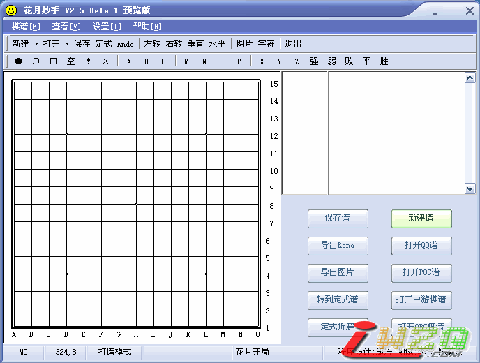

花月妙手V2.5 beta 1
#1 花月妙手V2.5 beta 1 作者：有志青年 发表时间：2007-4-8 17:18:45
软件名称：花月妙手五子棋互动棋谱软件
软件版本：V2.5 beta 1
软件作者：康岩[小丸.net]
软件类型：免费软件
主要功能：花月妙手五子棋互动棋谱软件直接读取各游戏中心的五子棋谱，且能快捷的转换成网络互动谱，导出图片。内建的定式拆解等功能也是您习棋必经之路。
友情提醒：目前花月妙手 V3.0正在紧张的开发中，但由于作者水平、精力、时间有限，软件的发布还有待时日，请大家耐心等等。
BETA 1新增功能：
１．增加导出文字棋盘
２．增加棋盘旋转功能
３．修改了一些小错误
４．增加生成iWZQ代码
V2.1正式版
1、增强棋谱管理功能，用目录树结构替代现在的列表结构。
2、棋谱提供备份，载入功能；
３、支持打开边烽、联众棋谱
４、支持保存系统所有设置
v2.0 beta1
１、调整了界面
２、增加导出图形文字棋谱的功能
３、重新修改导出rena谱，使软件通用化
４、棋谱增加删除功能
５、增加了几个漂亮的皮肤
V2.0
１、代码全部重写、界面更美观
２、增加打开ORC游戏棋谱、并支持多文件打开
３、互动棋谱支持更新
４、随心所欲改变棋盘，棋子、坐标颜色，以不同的颜色输出棋谱
v1.6b2025
１、增加打开ＰＯＳ棋谱、并支持多文件打开
２、修改了数字显示的位置
３、互动棋谱刷新
４、互动棋谱增加自由打谱功能
５、支持导出rena互动棋谱功能、与网站整合
６、增加了安装程序、安装更方便
v1.5
１、打开ＱＱ棋谱、中游棋谱、并支持多文件打开
２、增加摆棋模式
３、增加测试模式
４、增加调试模式[内部版]
５、增加了互动棋谱浏览功能
v1.0
１、软件支持在线打谱
２、支持新建空白谱、数据库谱、图形谱
３、支持显示与非显示信息框
４、支持导出字串谱、数据库谱、图形谱

#2 Re:花月妙手V2.5 beta 1 作者：yidefei 发表时间：2007-4-8 22:15:36
呵呵，先用一下看看#3 Re:花月妙手V2.5 beta 1 作者：极地剑客 发表时间：2007-4-14 7:24:42
5555~没倒记时功能~#4 Re:花月妙手V2.5 beta 1 作者：星辰 发表时间：2007-4-19 20:30:35
不错下了！呵呵！
谢谢！
#5 Re:花月妙手V2.5 beta 1 作者：潇湘剑客 发表时间：2007-4-22 12:06:13
kan kan#6 Re:花月妙手V2.5 beta 1 作者：xie2qi 发表时间：2007-5-16 12:19:30
hao#7 Re:花月妙手V2.5 beta 1 作者：z2cj 发表时间：2007-7-9 14:59:22
你好，这个怎么和电脑对下啊？